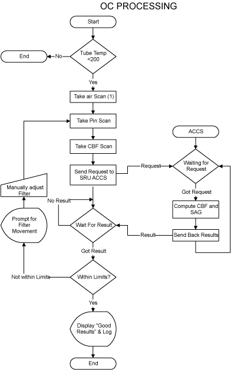
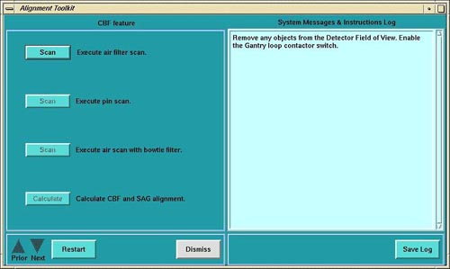
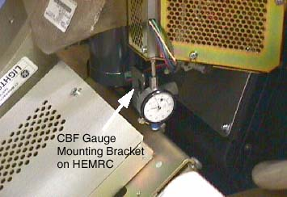
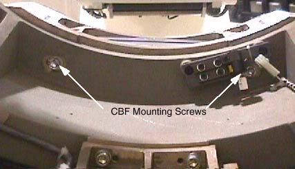
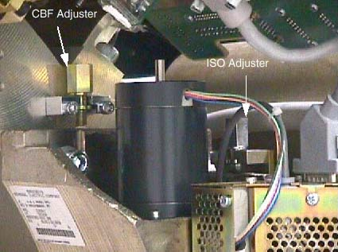

Operating Documentation
Direction 5193891-800, Rev# 5
LightSpeed 5.X Pro16 Limited Access Service Information (Adv)
Operating Documentation |
| Required Persons | Preliminary Reqs | Procedure | Finalization |
|---|---|---|---|
| 1 | 15 mins | 30 mins | 0 min |
Purpose: CBF/SAG Alignment ensures the focal spot is accurate, the bowtie filter is centered and center of rotation is in a straight line.
Illustration 1: CBF Procedural Flow

Wait 90 minutes if the new tube had more than 25 Kilo Joules of energy input, [KV x mA x Sec ÷ 1000] within the last 30 minutes prior to the start of system alignments. If a tube heat soak has been performed you must wait a minimum of 6 hours before system alignments can be performed.
Launch [CBF AND SAG ALIGNMENT]
Illustration 2: CBF / SAG Alignment Program Screen

Click on the <SCAN> button to execute air filter scan.
Place the 1/8 inch screw driver on the phantom holder (should be pointing into the Z direction).
Execute pin scan.
Execute air scan with bow-tie filter.
Click on the <CALCULATE> button to calculate the CBF and SAG alignment.
Mount indicator onto the HEMRC ( Illustration 3). Make sure that you zero the Dial Indicator. Later gantry versions have a similar bracket on the gantry's rotating base.
Illustration 3: CBF Dial Indicator Placement Example

Loosen the six (6) collimator cap screws. Four (4) cap screws are on the front side of the collimator. (One cap screw is behind the cable connections. Use a swivel adapter for ratchet wrench.) Two (2) cap are screws on the rear (through the rotating base casting). Reference Illustration 4.
Illustration 4: Collimator CBF Rear Mounting Screws

Adjust the Collimator as indicated by the results of the calculation. (Ignore the negative sign in front of the adjustments.)
Illustration 5: CBF Adjuster Location

Snug the Collimator mounting bolts.
Rescan and calculate.
Proceed to the next step if the adjustment is within limit, otherwise jump to step 7.
Apply Pre-load torque to (6) M12 Mounting bolts:
Table 1: Pre-Load Torque - M14
| 36 lb-ft | 53 N-m | 465 lb-in | 540 kg-cm |
Apply Final torque to (6) M14 Mounting bolts:
Table 2: Final Torque - M14
| 78 lb-ft | 106 N-m | 937 lb-in | 1081 kg-cm |
No finalization required.